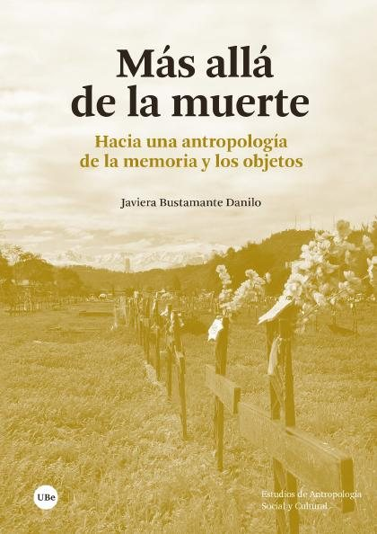
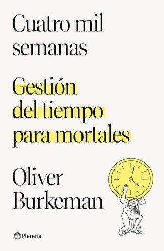
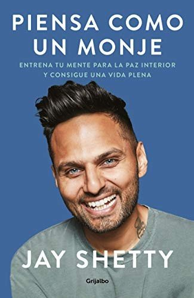
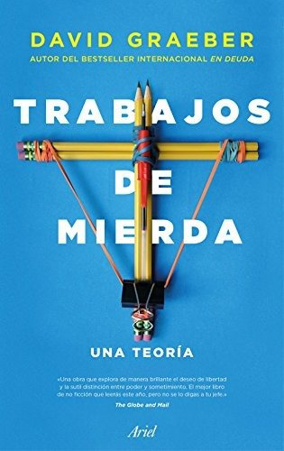
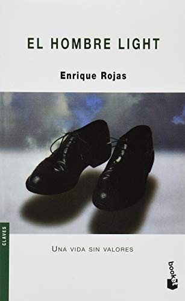
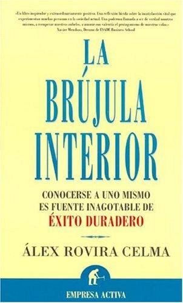
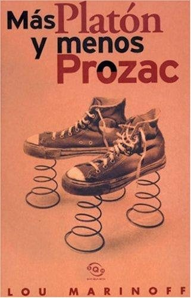
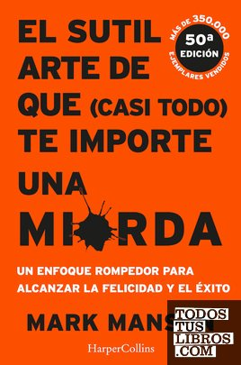

Libros de existencia, propósito y sentido vital
Libros de existencia, propósito y sentido vital en español: 9 libros completos para leer gratis aquí mismo y 25 fichas de títulos actuales.
Más allá de la muerte : hacia una antropología de la memoria y de los objetosBustamante Danilo, Javiera
Más allá de la muerte : hacia una antropología de la memoria y de los objetosBustamante Danilo, Javiera
La pulsión de muerte y el juego en el psicoanálisis de niñosZelaya P., Carmen Rosa
La pulsión de muerte y el juego en el psicoanálisis de niñosZelaya P., Carmen RosaLa crisis de la persona : la búsqueda del sentido de la vida en un contexto posmodernoGiesecke S. L., Mercedes.
La crisis de la persona : la búsqueda del sentido de la vida en un contexto posmodernoGiesecke S. L., Mercedes.Charlas de caféSantiago Ramón y Cajal
Charlas de caféSantiago Ramón y CajalObras de los moralistas griegos: Marco Aurelio, Teofrasto, Epicteto, CebesMarco Aurelio, Epicteto, Teofrasto, Cebes
Obras de los moralistas griegos: Marco Aurelio, Teofrasto, Epicteto, CebesMarco Aurelio, Epicteto, Teofrasto, CebesEl sentido de la vida mentalAguero, Gustavo
El sentido de la vida mentalAguero, GustavoEspiritualidad y educación socialBenavent-Vallès, Enric
Espiritualidad y educación socialBenavent-Vallès, EnricEl psicólogo ante las crisis de la vidaTeresa Pont i Amenós
El psicólogo ante las crisis de la vidaTeresa Pont i AmenósUna infancia bajo amenazade muerte : los niños en situación de calle en las grandes urbes ColombianasZambrano Gutiérrez, Ivannsan; Rojas, Claudia; Cano Higuita, Yearleydi
Una infancia bajo amenazade muerte : los niños en situación de calle en las grandes urbes ColombianasZambrano Gutiérrez, Ivannsan; Rojas, Claudia; Cano Higuita, YearleydiCuatro mil semanasOliver Burkeman
Cuatro mil semanasOliver Burkeman
La biblioteca de la medianocheMatt Haig
La biblioteca de la medianocheMatt HaigPiensa como un monjeJay Shetty
Piensa como un monjeJay Shetty
Trabajos de mierdaDavid Graeber
Trabajos de mierdaDavid Graeber
El poder del ahoraEckhart Tolle
El poder del ahoraEckhart TolleIkigai. Los secretos de Japón para una vida larga y felizHéctor García y Francesc Miralles
Ikigai. Los secretos de Japón para una vida larga y felizHéctor García y Francesc MirallesRecuerda que vas a morir. VivePaul Kalanithi
Recuerda que vas a morir. VivePaul KalanithiLa última lecciónRandy Pausch
La última lecciónRandy PauschSiddharthaHermann Hesse
SiddharthaHermann HesseEl miedo a la libertadErich Fromm
El miedo a la libertadErich FrommEl monje que vendió su FerrariRobin S. Sharma
El monje que vendió su FerrariRobin S. SharmaEl día que Nietzsche lloróIrvin D. Yalom
El día que Nietzsche lloróIrvin D. YalomEl hombre lightEnrique Rojas
El hombre lightEnrique Rojas
La brújula interiorÁlex Rovira
La brújula interiorÁlex Rovira
El arte de la felicidadDalái Lama y Howard C. Cutler
El arte de la felicidadDalái Lama y Howard C. CutlerMás Platón y menos ProzacLou Marinoff
Más Platón y menos ProzacLou Marinoff
Cuando todo se derrumbaPema Chödrön
Cuando todo se derrumbaPema ChödrönLos cuatro acuerdosMiguel Ruiz
Los cuatro acuerdosMiguel RuizMartes con mi viejo profesorMitch Albom
Martes con mi viejo profesorMitch AlbomEl hombre en busca de sentidoViktor E. Frankl
El hombre en busca de sentidoViktor E. FranklEl sutil arte de que (casi todo) te importe una mierdaMark Manson
El sutil arte de que (casi todo) te importe una mierdaMark Manson
La auténtica felicidadMartin E. P. Seligman
La auténtica felicidadMartin E. P. SeligmanSobre la muerte y los moribundosElisabeth Kübler-Ross
Sobre la muerte y los moribundosElisabeth Kübler-RossTener o serErich Fromm
Tener o serErich FrommDiario para estoicosRyan Holiday y Stephen Hanselman
Diario para estoicosRyan Holiday y Stephen HanselmanTemas relacionados
¿Estás eligiendo carrera?
Haz gratis el test de orientación vocacional de AURZANE: intereses, aptitudes, autoconcepto y hábitos de estudio, con informe completo.